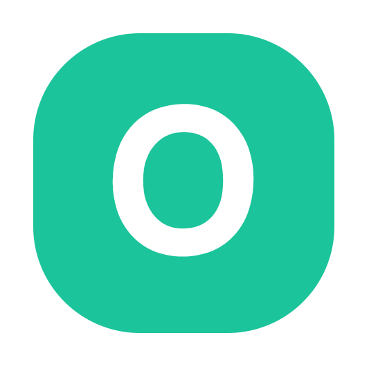

The Poor People App.
The Problem
The safety net runs on outdated software. 65% of middle-class Americans are struggling. 47% of U.S. households can't comfortably afford the basics. Administrative overhead eats 15–25% of healthcare spending — close to $1 trillion a year. Disability decisions average 220+ days. The wealthy have IRS codes, attorneys, and private networks. PPA gives everyone else equivalent leverage — powered by AI, Bitcoin, and decentralized coordination.
The Model — Uber for Human Services
PPA connects people who need help with people who can provide it — cutting bureaucratic overhead out entirely. Families ↔ vetted caregivers. Seniors ↔ companions. Students ↔ tutors. Anyone buried in paperwork ↔ navigators (SSA, Medicare, tax prep). No income verification. No waiting lists. No humiliation. Reputation-based matching where the best providers surface organically.
The AI Agent Architecture
PPA runs on a multi-layer autonomous AI workforce that replaces traditional organizational overhead. The Mobilization Agent is operational today — broadcasting content to Telegram and Nostr, scoring its own output, learning over time.
| Agent Layer | Equivalent Role | Function |
|---|---|---|
| Mobilization Agent | Automated CMO — Live ✅ | Content generation, campaign launch, broadcast to Telegram & Nostr |
| Strategic Intelligence | Digital Boardroom | Scenario simulations, C-level recommendations |
| Network Orchestration | Automated COO | Marketplace balance, partner onboarding, compliance |
| Service Delivery | AI Workforce | SNAP navigation, benefits processing, legal clinic intake |
Decentralized by Design
PPA must be able to fail while the community survives. Identities, reputation, and connections live on Nostr — a protocol, not a platform. Bitcoin backs the treasury. Lightning handles micro-payments. If the company dissolves, the network keeps running.
Full vision, agent layers, and the Sentinel Program live at poorpeople.app

OpenCare — The Live MVP
PPA is the vision. OpenCare is the proof — live, free, in production today, used to coordinate real elder care.
OpenCare is a care coordination platform built to solve a problem millions of caregivers face: coordinating care across people who don't use the same tools, don't live in the same place, and don't always communicate well. A caregiver creates a Care Circle — a shared workspace for everyone involved — then assigns tasks (medical, insurance, household, financial, legal, transportation), sets recurring schedules, and keeps everyone informed through automated email summaries and Telegram digests.
The platform features government ID verification through Persona (the same tech banks use), a REST API that AI agents like TheGreekClawd use to manage care tasks via natural language, daily Telegram and email digests, and a progressive web app installable from any browser. Built on Next.js, TypeScript, Supabase, Clerk, and Docker — deployed on AWS with SSL and production-hardened security.
This is what the Poor People App architecture looks like in practice — shipped, working, free, helping people right now. It's also the foundation for the next layer: a Nostr-based community where helpers discover caregivers who need them. Decentralized, censorship-resistant, identity-portable.
Tech: Next.js 14 · TypeScript · Tailwind CSS · Clerk Auth · Supabase (PostgreSQL with RLS) · Persona (identity verification) · Resend (email) · Telegram Bot API · Custom REST API · AWS EC2 · Docker · Nginx
JOIN PPA NOW
WHY BITCOIN
Banks freeze accounts. Processors deplatform organizations. Bitcoin is permissionless — no one can stop you from holding it, sending it, or building on it. For a platform serving people the system already ignores, that's not a luxury. It's a necessity.
Bitcoin backs PPA's treasury — not as a price bet, but because it's the only asset that can't be printed away when politically convenient. This isn't about getting rich. It's about building something that can't be shut down when we become inconvenient.
Software-development funding via GiveSendGo. Not an investment opportunity. Not a token presale. Campaign launching soon.